Several packages in the R ecosystem allow users to
estimate models for ordered or discrete choice, such as ordered probit
or multinomial logit. This case study illustrates the use of
marginaleffects with the MASS,
nnet, and mlogit packages.
We begin by loading two libraries:
MASS::polr function
Consider a simple ordered logit model in which we predict the number of gears of a car based its miles per gallon and horsepower:
Now, consider a car with 25 miles per gallon and 110 horsepower. The expected predicted probability for each outcome level (gear) for this car is:
predictions(mod, newdata = datagrid(mpg = 25, hp = 110))
#>
#> Group Estimate Std. Error z Pr(>|z|) 2.5 % 97.5 % mpg hp
#> 3 0.203 0.0959 2.12 0.0339 0.0155 0.391 25 110
#> 4 0.578 0.1229 4.70 <0.001 0.3373 0.819 25 110
#> 5 0.218 0.1007 2.17 0.0302 0.0209 0.416 25 110
#>
#> Columns: rowid, group, estimate, std.error, statistic, p.value, conf.low, conf.high, gear, mpg, hpSince the gear is categorical, we make one prediction
for each level of the outcome.
Now consider the marginal effects (aka slopes or partial derivatives) for the same car:
slopes(mod, variables = "mpg", newdata = datagrid(mpg = 25, hp = 110))
#>
#> Group Term Estimate Std. Error z Pr(>|z|) 2.5 % 97.5 % mpg hp
#> 3 mpg -0.06041 0.0169 -3.5809 <0.001 -0.09347 -0.0273 25 110
#> 4 mpg -0.00321 0.0335 -0.0958 0.9237 -0.06896 0.0625 25 110
#> 5 mpg 0.06362 0.0301 2.1132 0.0346 0.00461 0.1226 25 110
#>
#> Columns: rowid, group, term, estimate, std.error, statistic, p.value, conf.low, conf.high, predicted, predicted_hi, predicted_lo, gear, mpg, hpAgain, marginaleffects produces one estimate of the
slope for each outcome level. For a small step size \(\varepsilon\), the printed quantities are
estimated as:
\[\frac{P(gear=3|mpg=25+\varepsilon, hp=110)-P(gear=3|mpg=25-\varepsilon, hp=110)}{2 \cdot \varepsilon}\] \[\frac{P(gear=4|mpg=25+\varepsilon, hp=110)-P(gear=4|mpg=25-\varepsilon, hp=110)}{2 \cdot \varepsilon}\] \[\frac{P(gear=5|mpg=25+\varepsilon, hp=110)-P(gear=5|mpg=25-\varepsilon, hp=110)}{2 \cdot \varepsilon}\]
When we call avg_slopes(), marginaleffects
will repeat the same computation for every row of the original dataset,
and then report the average slope for each level of the outcome:
avg_slopes(mod)
#>
#> Group Term Estimate Std. Error z Pr(>|z|) 2.5 % 97.5 %
#> 3 hp -0.00377 0.001514 -2.49 0.01283 -0.006735 -0.00080
#> 4 hp 0.00201 0.000957 2.10 0.03545 0.000137 0.00389
#> 5 hp 0.00175 0.000833 2.11 0.03522 0.000122 0.00339
#> 3 mpg -0.07014 0.015480 -4.53 < 0.001 -0.100479 -0.03980
#> 4 mpg 0.03747 0.013857 2.70 0.00685 0.010311 0.06463
#> 5 mpg 0.03267 0.009572 3.41 < 0.001 0.013907 0.05143
#>
#> Columns: group, term, estimate, std.error, statistic, p.value, conf.low, conf.high
nnet package
The multinom function of the nnet package
allows users to fit log-linear models via neural networks. The
data used for this function is a data frame with one
observation per row, and the response variable is coded a factor. All
the marginaleffects package function work seamlessly with
this model. For example, we can estimate a model and compute average
marginal effects as follows:
library(nnet)
head(mtcars)
#> mpg cyl disp hp drat wt qsec vs am gear carb
#> Mazda RX4 21.0 6 160 110 3.90 2.620 16.46 0 1 4 4
#> Mazda RX4 Wag 21.0 6 160 110 3.90 2.875 17.02 0 1 4 4
#> Datsun 710 22.8 4 108 93 3.85 2.320 18.61 1 1 4 1
#> Hornet 4 Drive 21.4 6 258 110 3.08 3.215 19.44 1 0 3 1
#> Hornet Sportabout 18.7 8 360 175 3.15 3.440 17.02 0 0 3 2
#> Valiant 18.1 6 225 105 2.76 3.460 20.22 1 0 3 1
mod <- multinom(factor(gear) ~ hp + mpg, data = mtcars, trace = FALSE)
avg_slopes(mod, type = "probs")
#>
#> Group Term Estimate Std. Error z Pr(>|z|) 2.5 % 97.5 %
#> 3 hp -3.44e-05 0.00225 -0.0153 0.98780 -0.00444 0.004372
#> 4 hp -4.67e-03 0.00221 -2.1126 0.03464 -0.00900 -0.000337
#> 5 hp 4.70e-03 0.00130 3.6167 < 0.001 0.00215 0.007250
#> 3 mpg -7.13e-02 0.02645 -2.6959 0.00702 -0.12316 -0.019466
#> 4 mpg 1.59e-02 0.02010 0.7916 0.42859 -0.02348 0.055293
#> 5 mpg 5.54e-02 0.01642 3.3735 < 0.001 0.02322 0.087593
#>
#> Columns: group, term, estimate, std.error, statistic, p.value, conf.low, conf.highNotice that in such models, we get one marginal effect for each term,
for each level of the response variable. For this reason, we should use
"group" in the condition argument (or
facet_*() function) when calling one of the plotting
functions:
library(ggplot2)
plot_predictions(mod, condition = c("mpg", "group"), type = "probs")
plot_predictions(mod, condition = "mpg", type = "probs") + facet_wrap(~group)
plot_comparisons(
mod,
variables = list(mpg = c(15, 30)),
condition = "group",
type = "probs")
mlogit package
The mlogit package uses data in a slightly
different structure, with one row per observation-choice combination.
For example, this data on choice of travel mode includes 4 rows per
individual, one for each mode of transportation:
library("AER")
library("mlogit")
library(tidyverse)
data("TravelMode", package = "AER")
head(TravelMode)
#> individual mode choice wait vcost travel gcost income size
#> 1 1 air no 69 59 100 70 35 1
#> 2 1 train no 34 31 372 71 35 1
#> 3 1 bus no 35 25 417 70 35 1
#> 4 1 car yes 0 10 180 30 35 1
#> 5 2 air no 64 58 68 68 30 2
#> 6 2 train no 44 31 354 84 30 2
mod <- mlogit(choice ~ wait + gcost | income + size, TravelMode)
avg_slopes(mod, variables = c("income", "size"))
#>
#> Group Term Estimate Std. Error z Pr(>|z|) 2.5 % 97.5 %
#> air income 0.002786 0.00122 2.289 0.02208 0.000400 0.00517
#> bus income -0.000372 0.00110 -0.338 0.73547 -0.002531 0.00179
#> car income 0.003373 0.00137 2.456 0.01403 0.000682 0.00606
#> train income -0.005787 0.00132 -4.390 < 0.001 -0.008370 -0.00320
#> air size -0.126465 0.02892 -4.374 < 0.001 -0.183138 -0.06979
#> bus size 0.011345 0.02587 0.439 0.66096 -0.039353 0.06204
#> car size 0.045880 0.02476 1.853 0.06385 -0.002642 0.09440
#> train size 0.069240 0.02478 2.794 0.00521 0.020662 0.11782
#>
#> Columns: group, term, estimate, std.error, statistic, p.value, conf.low, conf.highNote that the slopes function will always return
estimates of zero for regressors before the vertical bar in the formula.
This is because the predict() function supplied by the
mlogit package does not produce different predictions for
different values of these variables.
To compute different kinds of marginal effects, we can construct
customized data frames and feed them to the newdata
argument of the slopes function.
Important: The newdata argument for
mlogit models must be a “balanced” data frame, that is, it
must have a number of rows that is a multiple of the number of
choices.
If we want to compute the slope of the response function (marginal effects) when each of the predictors is fixed to its global mean, we can do:
nd <- TravelMode |>
summarize(across(c("wait", "gcost", "income", "size"),
function(x) rep(mean(x), 4)))
nd
#> wait gcost income size
#> 1 34.58929 110.8798 34.54762 1.742857
#> 2 34.58929 110.8798 34.54762 1.742857
#> 3 34.58929 110.8798 34.54762 1.742857
#> 4 34.58929 110.8798 34.54762 1.742857
avg_slopes(mod, newdata = nd, variables = c("income", "size"))
#>
#> Group Term Estimate Std. Error z Pr(>|z|) 2.5 % 97.5 %
#> air income 6.66e-03 2.42e-03 2.75 0.00603 1.91e-03 1.14e-02
#> bus income -1.14e-03 9.43e-04 -1.21 0.22639 -2.99e-03 7.08e-04
#> car income 6.48e-06 2.02e-05 0.32 0.74893 -3.32e-05 4.62e-05
#> train income -5.52e-03 1.91e-03 -2.89 0.00383 -9.26e-03 -1.78e-03
#> air size -1.69e-01 5.88e-02 -2.88 0.00394 -2.85e-01 -5.43e-02
#> bus size 4.67e-02 2.72e-02 1.72 0.08623 -6.65e-03 1.00e-01
#> car size 1.36e-03 8.81e-04 1.54 0.12305 -3.68e-04 3.08e-03
#> train size 1.21e-01 4.45e-02 2.73 0.00634 3.42e-02 2.08e-01
#>
#> Columns: group, term, estimate, std.error, statistic, p.value, conf.low, conf.highIf we want to compute marginal effects with the gcost
and wait fixed at their mean value, conditional on
the choice of transportation mode:
nd <- TravelMode |>
group_by(mode) |>
summarize(across(c("wait", "gcost", "income", "size"), mean))
nd
#> # A tibble: 4 × 5
#> mode wait gcost income size
#> <fct> <dbl> <dbl> <dbl> <dbl>
#> 1 air 61.0 103. 34.5 1.74
#> 2 train 35.7 130. 34.5 1.74
#> 3 bus 41.7 115. 34.5 1.74
#> 4 car 0 95.4 34.5 1.74
avg_slopes(mod, newdata = nd, variables = c("income", "size"))
#>
#> Group Term Estimate Std. Error z Pr(>|z|) 2.5 % 97.5 %
#> air income 0.006015 0.00233 2.585 0.00975 0.001454 0.01058
#> bus income -0.000713 0.00146 -0.489 0.62481 -0.003570 0.00214
#> car income 0.005445 0.00229 2.382 0.01721 0.000965 0.00993
#> train income -0.010747 0.00256 -4.202 < 0.001 -0.015760 -0.00573
#> air size -0.232927 0.05659 -4.116 < 0.001 -0.343848 -0.12201
#> bus size 0.020440 0.03436 0.595 0.55195 -0.046908 0.08779
#> car size 0.067820 0.04123 1.645 0.09996 -0.012984 0.14862
#> train size 0.144668 0.04774 3.030 0.00244 0.051102 0.23823
#>
#> Columns: group, term, estimate, std.error, statistic, p.value, conf.low, conf.highWe can also explore more complex alternatives. Here, for example, only one alternative is affected by cost reduction:
nd <- datagrid(mode = TravelMode$mode, newdata = TravelMode)
nd <- lapply(1:4, function(i) mutate(nd, gcost = ifelse(1:4 == i, 30, gcost)))
nd <- bind_rows(nd)
nd
#> individual choice wait vcost travel gcost income size mode
#> 1 1 no 35 48 486 30 35 2 air
#> 2 1 no 35 48 486 111 35 2 train
#> 3 1 no 35 48 486 111 35 2 bus
#> 4 1 no 35 48 486 111 35 2 car
#> 5 1 no 35 48 486 111 35 2 air
#> 6 1 no 35 48 486 30 35 2 train
#> 7 1 no 35 48 486 111 35 2 bus
#> 8 1 no 35 48 486 111 35 2 car
#> 9 1 no 35 48 486 111 35 2 air
#> 10 1 no 35 48 486 111 35 2 train
#> 11 1 no 35 48 486 30 35 2 bus
#> 12 1 no 35 48 486 111 35 2 car
#> 13 1 no 35 48 486 111 35 2 air
#> 14 1 no 35 48 486 111 35 2 train
#> 15 1 no 35 48 486 111 35 2 bus
#> 16 1 no 35 48 486 30 35 2 car
avg_slopes(mod, newdata = nd, variables = c("income", "size"))
#>
#> Group Term Estimate Std. Error z Pr(>|z|) 2.5 % 97.5 %
#> air income 8.24e-03 2.46e-03 3.352 <0.001 3.42e-03 0.013058
#> bus income -1.33e-03 1.30e-03 -1.020 0.308 -3.88e-03 0.001222
#> car income 2.66e-05 4.31e-05 0.617 0.537 -5.79e-05 0.000111
#> train income -6.94e-03 1.86e-03 -3.735 <0.001 -1.06e-02 -0.003298
#> air size -2.12e-01 6.02e-02 -3.526 <0.001 -3.31e-01 -0.094366
#> bus size 6.06e-02 3.79e-02 1.600 0.110 -1.37e-02 0.134911
#> car size 2.38e-03 1.57e-03 1.512 0.131 -7.04e-04 0.005459
#> train size 1.49e-01 4.28e-02 3.489 <0.001 6.55e-02 0.233392
#>
#> Columns: group, term, estimate, std.error, statistic, p.value, conf.low, conf.high